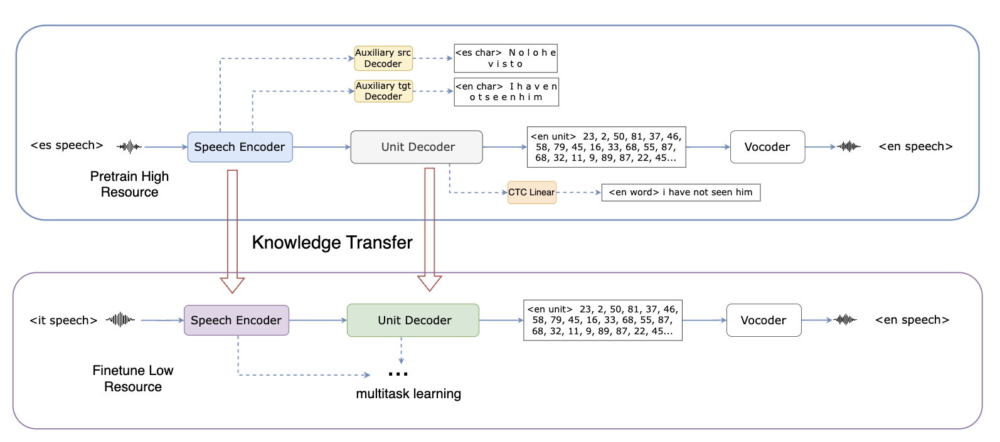

Improving Speech-to-Speech Translation for
End-to-end Speech-to-Speech Translation (S2ST) enables direct transformation from source speech in one language to target speech in another. Still, it typically requires large-scale parallel data, which is unavailable for many low-resource languages. In this work, we investigate transfer learning strategies to improve S2ST performance in low-resource settings. Our approach involves pretraining a multitask S2ST model on high-resource language pairs (e.g., French-English, German-English, Spanish-English) and transferring parameters to models for low-resource pairs such as Italian-English.
We evaluate multiple transfer configurations, including full S2UT transfer, auxiliary ASR module sharing, and partial encoder/decoder reuse. Experimental results demonstrate that transfer from French-English consistently yields the most significant gains, owing to its larger data volume. BLEU scores improve from 10.41 to 13.77 (ES-EN), 9.70 to 12.15 (DE-EN), and more notably from 2.89 to 10.01 and 2.10 to 9.10 for the low-resource IT-EN and RU-EN pairs. Ablation studies show that encoder transfer contributes more to performance than decoder transfer, and that auxiliary ASR modules provide limited benefits.
These findings suggest that carefully designed structural transfer, particularly of the encoder, is crucial for effective low-resource S2ST.

Figure 1. Architecture of our transfer learning approach for end-to-end speech-to-speech translation. The upper part shows the multi-task pretraining on high-resource language pairs, and the lower part shows fine-tuning on low-resource language pairs.
🔗 Quick Navigation
Fr-En Translation Results
Sample
Ground Truth
Translation
Source (French)
Target (English)
S2UT
S2UT + ES_Pretrain
S2UT + DE_Pretrain
S2UT + FR_Pretrain
Sample1
Reference
Certaines de mes interrogations sont semblables aux vôtres.
some of my questions are similar to yours
ASR
some of my questions are similar to you
some of my questions are similar to yours
some of my interrogations are similar to yours
Sample2
Reference
Je mets aux voix l’amendement numéro un.
i will now put to the vote amendment number one
ASR
i'm putting amendment number one
i am putting to the vote amendment number one
i'm putting amendment number one
Sample3
Reference
Je citerai, d’abord, l’investissement productif et la croissance durable
i will first quote the productive investment and the sustainable growth
ASR
i would first make the productive investment in the english girof
i'll first investigate the productive investment in real growth
i will first investment productive in growth
Es-En Translation Results
Sample
Ground Truth
Translation
Source (Spanish)
Target (English)
S2UT
S2UT + ES_Pretrain
S2UT + DE_Pretrain
S2UT + FR_Pretrain
Sample1
Reference
te veo muy arreglada . ¿ has quedado con alguien ?
i see you very well dressed are you going to see anyone
ASR
you've looked very dressed up do you can see with some one
do you look fairy dressed up do you have date with some one
you look fairy dressed up do you have a date with some one
Sample2
Reference
a ver , Palomares , yo creo que lo de ser cura no es
let's see palomares i think that being a priest it's not
ASR
let's see i seen my marrows i think its priest is not
let's see palamars i think it is not priesting
let's see palamars i think that the priest it's not
Sample3
Reference
A ese grupo de amigos les gusta comer helados por la tarde
that group of friends likes to eat ice creams in the afternoon
ASR
it is the group friend's luck eventually in the afternoon
their group of friends it is liked to venerate for the afternoon
that group of friends likes to eat ice creams in the afternoon
De-En Translation Results
Sample
Ground Truth
Translation
Source (German)
Target (English)
S2UT
S2UT + ES_Pretrain
S2UT + DE_Pretrain
S2UT + FR_Pretrain
Sample1
Reference
An der Wand hängen Porträts aller ehemaligen Bonzen des Hauses.
on the wall hang portraits of all the former rich people of the house
ASR
election portraits of all the former bonds of the house
on the constituency portraits all the former ponds of the house
on the wall of the portraits all former bonds of the house
Sample2
Reference
Valerie wohnt in einem alten Plattenbau aus DDR-Zeiten.
valerie lives in an old apartment block from g d r times
ASR
quality lives in the old record living building on the old play trees
volity lives lived in the old record from the old building
vality lives in the old record cultivation from the old time
Sample3
Reference
Jörg studiert irgendwas mit Medien
jorg studies something with media
ASR
new york studied with medium
york studied some one with medium
yorg studied something with media
It-En Translation Results
Sample
Ground Truth
Translation
Source (Italian)
Target (English)
S2UT
S2UT + ES_Pretrain
S2UT + DE_Pretrain
S2UT + FR_Pretrain
Sample1
Reference
Queste competenze risultano indispensabili per l'attivit`a di educatore che operi nell'ambito di un sistema formativo.
these competencies are indispensable for the educator activities who operates in the education system
ASR
suspension resigns and individual partic abilities that required of every difficulty in orderable
competency results in results of the devocating editory of the education of evidence system
these competence is result inexpensable developators that it involved in a formatic system
these competence inespensible to expensivels partly activities that offers the individual system of the information
Sample2
Reference
Un altro evento che viene narrato riguarda il vecchio asino grigio
another event being told concerns the old grey donkey
ASR
or open and vasso in invilliboro royal then a feast at his coffin
another event that has interrogated in a single grid
another dress that he could have kept in other beats has a brief lower
another event is in order to the great competition that grey
Ru-En Translation Results
Sample
Ground Truth
Translation
Source (Russian)
Target (English)
S2UT
S2UT + ES_Pretrain
S2UT + DE_Pretrain
S2UT + FR_Pretrain
Sample1
Reference
Я предоставляю слово представителю Армении для выступления по порядку ведения заседания.
i give the floor to the representative of armenia to speak on a point of order
ASR
i will keep on following this principle in position of the conference unders armament in non proliferation regime
i give the floor to the representative of armenia to speak on a meeting of the meeting
i give the floor to the representative of our joining for its seeking
i give the floor to the representative of anne meteor for speaking about the authorized meeting
Sample2
Reference
Теперь я предоставляю слово представителю Бангладеш.
i am giving floor now to the representative of bangladesh
ASR
now i turned to the list of speakers for to day
now i turned to the representative of bengledesh
now i give the floor to the representative of whole of bengalish
i'm now give the floor to the representative of bengladash
Sample3
Reference
Мы твердо убеждены, что самой крупной угрозой безопасности всех стран является существование ядерного оружия.
we firmly believe that the biggest threat to the safety of all countries is the nuclear weapon
ASR
we are convince that such agreements will be destructive president of the provisions of the secretary general
we are firmly believed that the benefit security and security are all satisfaction in nuclear weapons
we firmly believe that the most trafficking threats of security is nuclear weapon
we firmly believe that the thread of the security threat is attestified for nuclear weapons